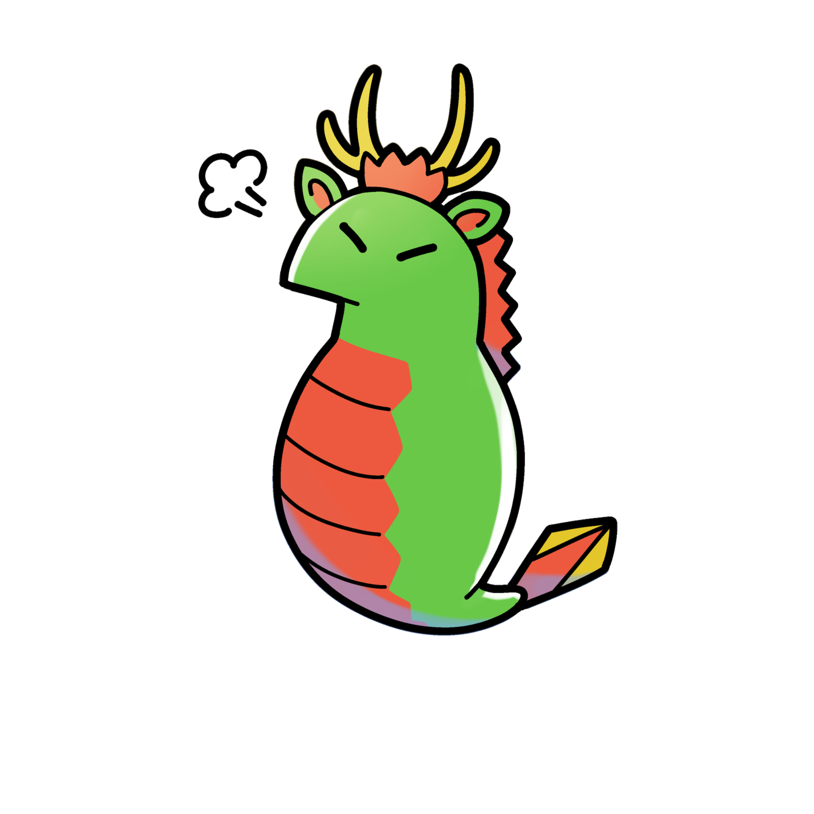
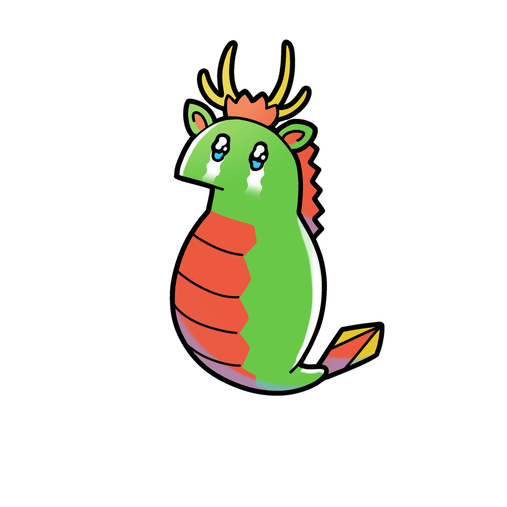

IWAMI ARTS PROJECT / OFFICIAL CHARACTER
はじめまして！タツノコくん。
HELLO FROM IWAMI!
石見神楽の「大蛇（オロチ）」から
やってきた、ぼくらの公式キャラクター。
舞台のワクワクも、アートの発見も。いつもそばで見守ってくれる、表情豊かなタツノコくんを紹介します。
いろんな表情を見てみよう ↓
ABOUT TATSUNOKO-KUN
タツノコくんって、
だあれ？
タツノコくんは、IWAMI ARTS PROJECTの公式キャラクターです。
モチーフは、石見地方に受け継がれる伝統芸能・石見神楽に登場する大蛇（オロチ）。大きな伝説の存在が、親しみやすい小さな姿になって、私たちの活動を彩ります。
演劇や音楽、ワークショップ、国際交流。石見から生まれる多彩なアートとともに、タツノコくんの姿を探してみてください。

IWAMI ARTS PROJECT 公式キャラクター
SIX LITTLE EXPRESSIONS
今日のきもちは、
どのタツノコくん？
表情は全部で6種類。
どの子も、そのままの姿でご紹介します。


